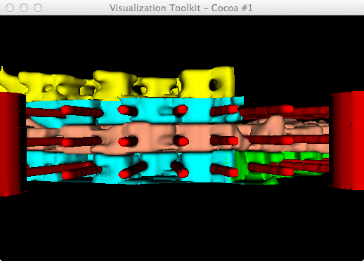
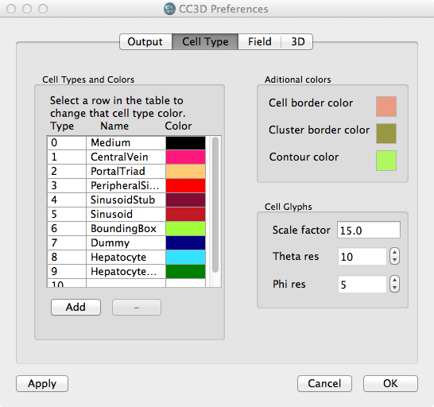

First attempt at combining hep cell and sinusoids - with cutaways via multiple clipping planes. Not so good due to uncapped cavities, either from periodic BCs or clip plane.
Contents |
Background: Jim has created initial conditions for a single, hexagonal-shaped liver lobule consisting of 3 layers of sinusoids (blood vessels and related vein plumbing) with hepatocyte cells in between. Model dims: 341, 297, 36.
Showing 3 hep cells, with periodic wraparound issue for 2 of them,
i.e. caps are on the bottom. Right: making a copy of bottom [parts of]
cells and translating to the top.
Translating all cells on bottom slab to top
Showing just center slab of hep cells (with smoothing=400)
Center slab of hep cells; radial distance threshold (right)
Experimenting w/ smoothing filter: BoundarySmoothing and FeatureEdgeSmoothing methods
First attempt at combining hep cell and sinusoids - with cutaways via multiple clipping planes. Not so good due to
uncapped cavities, either from periodic BCs or clip plane.

Showing the rendering of the 3 different slabs of hep cells. Bottom
slab (cyan and green; cyan are those cropped out
with a plane) that wrap around due to periodic boundaries and then we
crop just those on the very bottom (not the ones
wrapped around to the top) and translate them up in Z (yellow) so they
cap the top ones. Center slab of cells are salmon-colored.
(Left)All salmon-colored hep cells, smoothing 400.
(Right)With center slab of cells opacity=0.5 (not identical viewing angles).
Displaying cell glyphs (but in Prefs:3D tab, only showing cell types
5(sinusoid) and 8(hep); i.e. make 0,1,2,3,4,6,7,9 invisible)

The current Prefs:Cell Type panel only allows a single, absolute scale factor for all glyphs. We would like to
have each cell type have its own scaling factor. Also, note the glyph colors are simply adopting a default color map,
according to cell type scalar. We (probably) want to use the colors listed in the table.

Showing both cell glyph (wireframe) and normal "Cells" vis of celltype 8 (hep).

MCS 105 vs. 184; hep cells have continued to grow.
Now using correct colors (from Prefs:Cell Type colors) and scaling
glyphs by radius instead of volume (using Vol^(1/3)). Notice that at
the beginning of the sim, the hep cells are quite small compared to the
sinusoid cells, but over time they grow and become larger than the
sinusoid cells.
Showing cell glyphs for all cell types except 0 and 6.
Colormap for cell types.
After changing the colors slightly; showing glyphs and normal cell renderings.
Showing that we can perform clipping/capping of hep cell glyphs (2 sets); no scaling by volume.
Doing a radial crop from center for hep cells; global scale (0.5)
for sphere glyphs, plus scale by ~radii; growing hep cells
ivory-colored; smoothed vessels; clipping planes in Z and X.

Experimenting with vtkSuperquadricSource as a glyph. Seem to have a
bug with the clipping/capping of cells, plus the shape isn't much
different, even it they were oriented properly.
Bug(?) when clipping/capping superquadric glyphs (right) instead of spheres (left).
# python quadric_glyphs3_orient.py 0.6 .7
import vtk
import sys,string
argc = len(sys.argv)
#print 'argc=',argc
if argc < 3:
print 'Usage: ',sys.argv[0],' phi theta' # e.g. 0.6 0.7
raise ValueError, 'Too few input args'
idx=1
phi = string.atof(sys.argv[idx])
idx += 1
theta = string.atof(sys.argv[idx])
r_hep=1.0
g_hep=160./255
b_hep=122./255
# Python example translated directly from Tcl test
# [vtk_source]/Graphics/Testing/Tcl/progGlyphs.tcl
res = 6
plane = vtk.vtkPlaneSource()
plane.SetResolution(res,res)
colors = vtk.vtkElevationFilter()
colors.SetInputConnection(plane.GetOutputPort())
colors.SetLowPoint(-0.25,-0.25,-0.25)
colors.SetHighPoint(0.25,0.25,0.25)
planeMapper = vtk.vtkPolyDataMapper()
planeMapper.SetInput(colors.GetPolyDataOutput())
planeActor = vtk.vtkActor()
planeActor.SetMapper(planeMapper)
planeActor.GetProperty().SetRepresentationToWireframe()
squad = vtk.vtkSuperquadricSource()
scale = 0.5
squad.SetScale(scale,scale,scale)
#squad.SetCenter(xyz)
squad.SetPhiRoundness(phi)
squad.SetThetaRoundness(theta)
squad.SetPhiResolution(32)
squad.SetThetaResolution(32)
sphereRadius = 0.3
hepSpheres = vtk.vtkSphereSource()
hepSpheres.SetRadius(sphereRadius)
hepSpheres.SetThetaResolution(15)
hepSpheres.SetPhiResolution(15)
transform = vtk.vtkTransform()
transform.Scale(1.3, 1.0, 1)
hepSpheresX = vtk.vtkTransformPolyDataFilter()
hepSpheresX.SetInputConnection(hepSpheres.GetOutputPort())
hepSpheresX.SetTransform(transform)
reader = vtk.vtkDataSetReader()
reader.SetFileName('sp2x2_vecs.vtk')
#glypher = vtk.vtkProgrammableGlyphFilter()
glypher = vtk.vtkGlyph3D()
#glypher.SetInputConnection(colors.GetOutputPort())
glypher.SetInputConnection(reader.GetOutputPort())
#glypher.SetSource(squad.GetOutput())
glypher.SetSource(hepSpheresX.GetOutput())
glypher.SetScaleModeToDataScalingOff()
glypher.OrientOn()
#glypher.SetGlyphMethod(Glyph)
glyphMapper = vtk.vtkPolyDataMapper()
glyphMapper.SetInputConnection(glypher.GetOutputPort())
glyphMapper.ScalarVisibilityOff()
glyphActor = vtk.vtkActor()
glyphActor.SetMapper(glyphMapper)
glyphActor.GetProperty().SetColor(r_hep,g_hep,b_hep)
ren1 = vtk.vtkRenderer()
renWin = vtk.vtkRenderWindow()
renWin.SetMultiSamples(0)
renWin.AddRenderer(ren1)
iren = vtk.vtkRenderWindowInteractor()
iren.SetRenderWindow(renWin)
#ren1.AddActor(planeActor)
ren1.AddActor(glyphActor)
ren1.SetBackground(1,1,1)
renWin.SetSize(450,450)
renWin.Render()
iren.Start()
Showing both SuperQuadrics and (transformed) Spheres
Non-oriented mix of hep cells visualizations.
Oriented (just based on center of lobule) mix of hep cells visualizations.
Oriented hep cell glyphs and sinusoids.